Bonus Material: Work with Models
The material we covered in these slides is from Kieran Healy’s freely available textbook Data Visualization: A Practical Introduction. The link to this book can be found on our Blackboard page.
Rarely can we jump from raw numbers in a data table to a proper visualisation. Data needs to be summarised and/or transformed before it can be plotted. To help us with this, we create statistical models.
We can use various modelling techniques directly within geoms in ggplot2.
Examples in these slides use the gapminder dataset. This dataset tracks economic and social indicators (e.g., life expectancy, GDP per capita) over time. You will need to install the package before loading the library.
# A tibble: 8 × 6
country continent year lifeExp pop gdpPercap
<fct> <fct> <int> <dbl> <int> <dbl>
1 Afghanistan Asia 1952 28.8 8425333 779.
2 Afghanistan Asia 1957 30.3 9240934 821.
3 Afghanistan Asia 1962 32.0 10267083 853.
4 Afghanistan Asia 1967 34.0 11537966 836.
5 Afghanistan Asia 1972 36.1 13079460 740.
6 Afghanistan Asia 1977 38.4 14880372 786.
7 Afghanistan Asia 1982 39.9 12881816 978.
8 Afghanistan Asia 1987 40.8 13867957 852.For these slides, be sure to install and load these packages: tidyverse, gapminder, socviz, broom, modelr, scales, survey, and srvyr.
Recall that histograms, density plots, and boxplots compute either single numbers or new variables before plotting them.
Histogram for life expectancy (lifeExp)
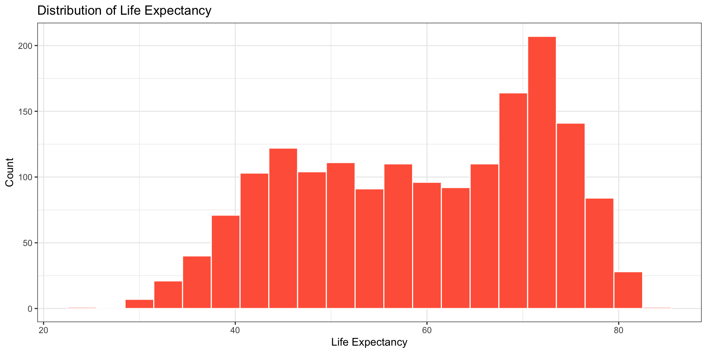
Density plot for life expectancy (lifeExp) by continent (continent)
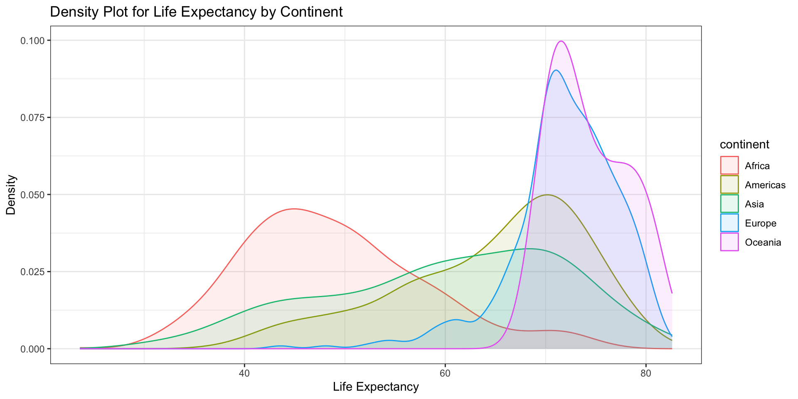
Boxplot for life expectancy (lifeExp) by continent (continent)
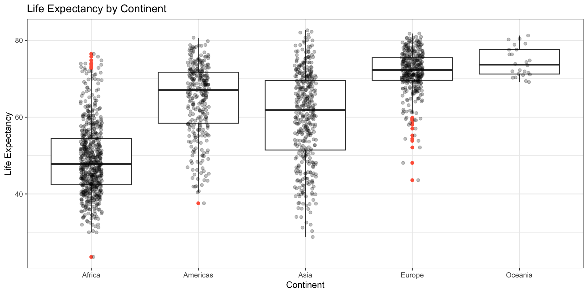
We also learned how to add a regression line using geom_smooth() function. Here we add a regression line for the scatterplot looking at GDP per capita (gpdPercap) by life expectancy (lifeExp)
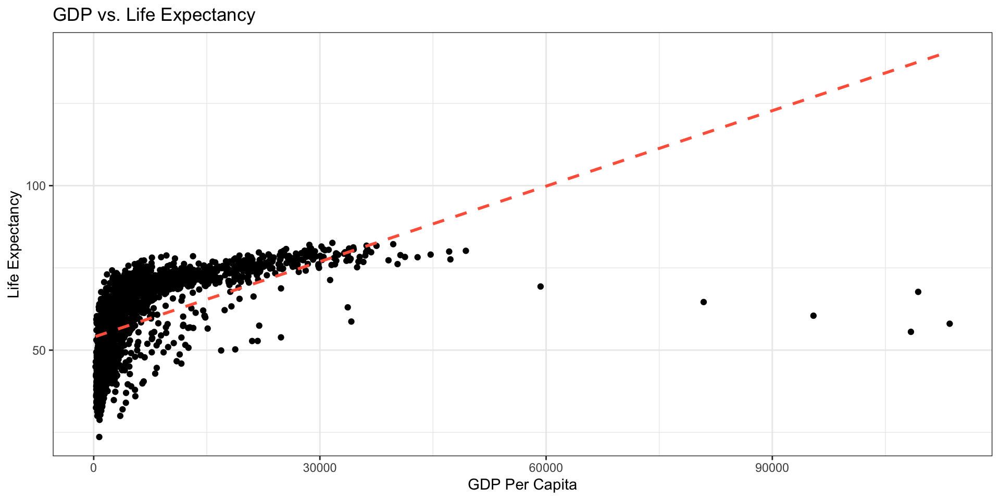
Notice the data didn’t look normally distributed. One option is to log transform GDP per capita (gdpPercap)
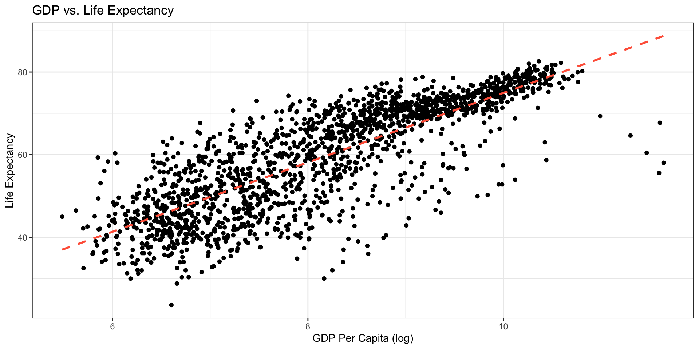
geom_smooth()The geom_smooth fuction can take a range of method arguments to fit LOESS, OLS, robust regression lines, and others.
rlmThe lm() function provides a standard linear regression model. It assumes that the data follow a normal distribution and it is sensitive to outliers, which can lead to biased coefficient estimates.
A robust linear regression may be better. We can use the rlm() function. This function uses a robust M-estimation approach and downplays the impact of outliers. It’s more suitable for datasets with influential observations.
rlmp <- ggplot(data = gapminder, aes(x = log(gdpPercap), y = lifeExp)) +
geom_point(alpha = 0.1) +
geom_smooth(method = MASS::rlm, se = FALSE, color = "tomato", linetype = "solid") +
geom_smooth(method = "lm", se = FALSE, color = "steelblue", linetype = "solid") +
labs(title = "GDP vs. Life Expectancy", x = "GDP Per Capita (log)", y = "Life Expectancy") +
theme_bw()
print(p)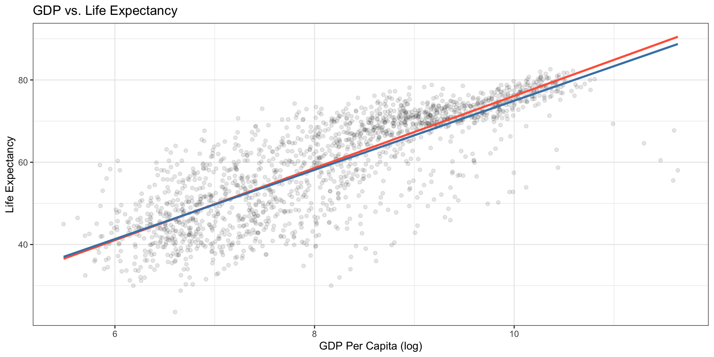
Note: calling MASS:: rlm allows us to directly access the rlm function without loading the whole library.
A spline is a special function defined by polynomial pieces. The term ‘spline’ refers to a broad family of functions used to fit curves to data points. These functions are valuable in applications where you need to both interpolate (find new data points within a range of known data points) and smooth out data, whether it’s one-dimensional or multi-dimensional.
Spline regression is a powerful non-parametric regression method. Instead of fitting a single model to the entire dataset, this technique divides the data into smaller segments at specific points called knots. Each segment, or “bin,” is then fitted with its own separate model. This allows for more flexible and accurate modeling of complex relationships in the data.
bsp <- ggplot(data = gapminder, aes(x = log(gdpPercap), y = lifeExp)) +
geom_point(alpha = 0.1) +
geom_smooth(color = "tomato", method = "lm", size = 1.2,
formula = y ~ splines::bs(x, 3), se = FALSE) +
labs(title = "GDP vs. Life Expectancy", x = "GDP Per Capita (log)", y = "Life Expectancy") +
theme_bw()
print(p)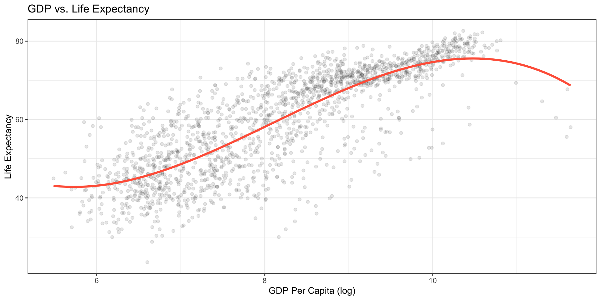
Note: We are using splines::bs to call the bs (b-spline) function from the splines package. The default spline model in R is a third-degree polynomial.
geom_quantileThe geom_quantile function is like a specialised version of geom_smooth. It can fit quantile regression lines using a variety of methods. The quantiles argument takes a vector specifying the quantiles at which to fit the lines.
Quantile regression models the relationship between a set of predictor variables and specific quantiles (or percentiles) of a target variable, rather than just the conditional mean. It’s more robust to outliers and doesn’t assume a particular distribution for the data, making it useful for understanding how relationships change across different parts of a dataset.
rq in geom_quantileThe geom_quantile() function is used to visualise quantile regression models. By default, it uses the rq() method from the quantreg package to fit a linear quantile regression.
The core usage of the rq() function is similar to lm(), but it includes a crucial additional parameter, tau. Tau is a numerical value between 0 and 1 that represents the quantile you want to model. For example, tau = 0.5 fits the median while tau = 0.25 and tau = 0.75 fit the first and third quantiles, respectively.
rq in geom_quantileLet’s use quantile regression to look at GDP per capita (gpdPercap) and life expectancy (lifeExp), with the three lines representing the 50th, 25th, and 75th quantiles.
The middle line (50th quantile) will model the relationship for a “typical” country.
The lower line (25th quantile) and upper line (75th quantile) will model the relationship for countries at the 25th and 75th percentile of life expectancy, respectively. These will show the expected life expectancy for the “bottom quarter” and “top quarter” of countries at a given GDP per capita.
rq in geom_quantilep <- ggplot(gapminder, aes(x = log(gdpPercap), y = lifeExp)) +
geom_point(alpha = 0.3) +
geom_quantile(method = "rq", quantiles = c(0.25, 0.5, 0.75), size = 1, se = FALSE) +
labs(
title = "Quantile Regression of Life Expectancy vs. GDP per Capita",
x = "GDP per Capita (log)", y = "Life Expectancy"
) +
theme_bw()
print(p)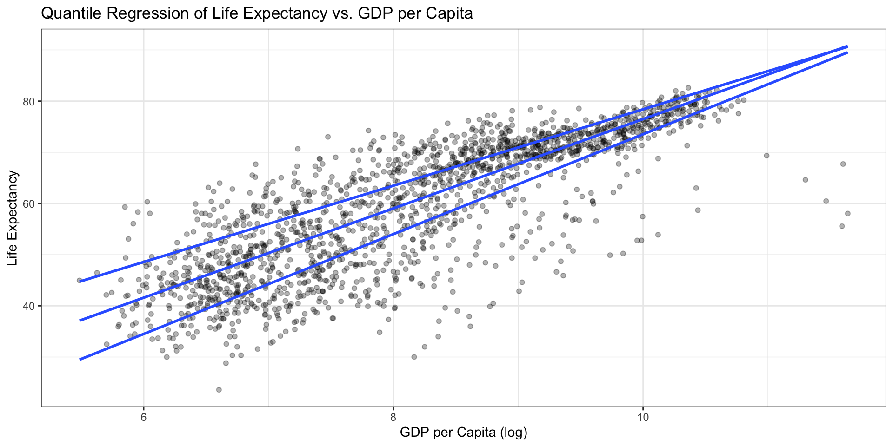
rqss in geom_quantileUsing rqss with a lambda value of 1 introduces non-linearity and smoothing to the quantile regression lines. Unlike the linear rq method, the rqss method fits a spline, allowing the lines to curve and follow the shape of the data more closely.
A lambda of 1 is a relatively small value, allowing for a good amount of flexibility, but not so much that the lines become overly “wiggly” and overfit the data. Larger lambda values would result in straighter, more constrained lines, while smaller values would produce more flexible, curvier lines.
rqss in geom_quantilep <- ggplot(gapminder, aes(x = log(gdpPercap), y = lifeExp)) +
geom_point(alpha = 0.1) +
geom_quantile(color = "tomato", size = 1.2, method = "rqss",
lambda = 1, quantiles = c(0.25, 0.5, 0.75)) +
labs(
title = "Quantile Regression of Life Expectancy vs. GDP per Capita",
x = "GDP per Capita (log)", y = "Life Expectancy"
) +
theme_bw()
print(p)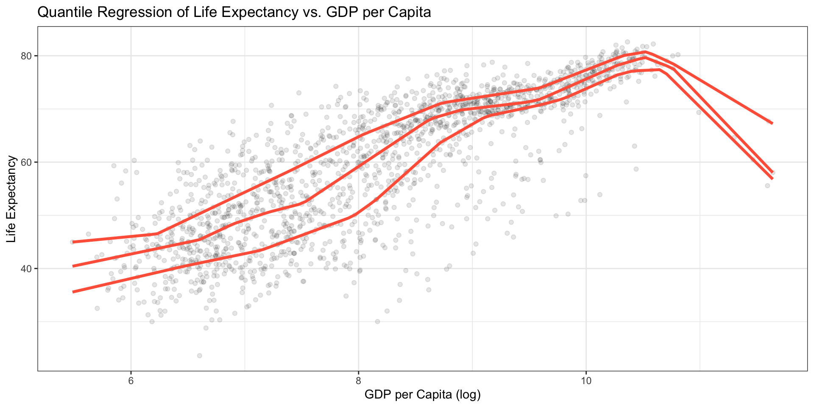
We can look at several fits on the sample plot by layering on new smoothers with geom_smmoth().
By setting the color and fill aesthetics to different values for each fit, we can easily distinguish them visually.
However, ggplot will not draw a legend to tell us which fit is which because the smoothers are not logically connected to one another. Instead, they exist as separate layers.
With geom_smooth we can map the color and fill aesthetics to a string describing the model we are fitting. We can then use scale_color_manual() and scale_fill_manual() to create the legend.
Let’s create a plot with three different smoothers (lm, cubic spline, and loess).
We will start by selecting three qualtitatively different colours from a larger palette using the RColorBrewer package and the function brewer.pal
Now we can create a plot with our three smoothers, mapping the colour and fill within the aes() function as the name of the smoother.
Usually we have mapped aesthetics to names of variables, not strings. Now, we can create a new single-value variable for the name of each of our models and ggplot will properly construct the relevant guide if we call scale_color_manual() and scale_fill_manual(), resulting in a sinple plot with legend.
p0 <- ggplot(data = gapminder,
mapping = aes(x = log(gdpPercap), y = lifeExp))
p1 <- p0 + geom_point(alpha = 0.2) +
geom_smooth(method = "lm", aes(color = "OLS", fill = "OLS")) +
geom_smooth(method = "lm", formula = y ~ splines::bs(x, df = 3),
aes(color = "Cubic Spline", fill = "Cubic Spline")) +
geom_smooth(method = "loess",
aes(color = "LOESS", fill = "LOESS"))
p1 + scale_color_manual(name = "Models", values = our_model_colours) +
scale_fill_manual(name = "Models", values = our_model_colours) +
theme(legend.position = "top")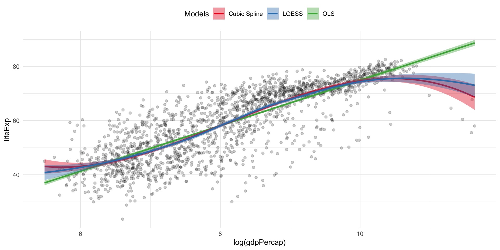
lm()) are more complex than data frames.Goal: Learn how to explore model objects and extract useful pieces for plotting.
str()Just like with data frames, we can use str() to peek inside any object.
tibble [1,704 × 6] (S3: tbl_df/tbl/data.frame)
$ country : Factor w/ 142 levels "Afghanistan",..: 1 1 1 1 1 1 1 1 1 1 ...
$ continent: Factor w/ 5 levels "Africa","Americas",..: 3 3 3 3 3 3 3 3 3 3 ...
$ year : int [1:1704] 1952 1957 1962 1967 1972 1977 1982 1987 1992 1997 ...
$ lifeExp : num [1:1704] 28.8 30.3 32 34 36.1 ...
$ pop : int [1:1704] 8425333 9240934 10267083 11537966 13079460 14880372 12881816 13867957 16317921 22227415 ...
$ gdpPercap: num [1:1704] 779 821 853 836 740 ...str(gapminder)The output from str(gapminder) is quite dense. It contains information about the object as a whole as well as each variable in it.
str()The same idea applies to models. But models are more complex, so their structure is more complicated. Any information we might want about a model is stored in or is computable from parts of a model object.
str()To demonstrate, let’s look at a model of life expectancy.
lm() creates an object called out. That object is a list with named components.
We can use summary(), a generic function. summary() checks the class of its input and then dispatches a class-specific method. For an lm() object, it calls summary.lm(), which calcualtes and formats the model output. This is why summary() looks different for a data frame vs. model.
Call:
lm(formula = lifeExp ~ gdpPercap + pop + continent, data = gapminder)
Residuals:
Min 1Q Median 3Q Max
-49.161 -4.486 0.297 5.110 25.175
Coefficients:
Estimate Std. Error t value Pr(>|t|)
(Intercept) 4.781e+01 3.395e-01 140.819 < 2e-16 ***
gdpPercap 4.495e-04 2.346e-05 19.158 < 2e-16 ***
pop 6.570e-09 1.975e-09 3.326 0.000901 ***
continentAmericas 1.348e+01 6.000e-01 22.458 < 2e-16 ***
continentAsia 8.193e+00 5.712e-01 14.342 < 2e-16 ***
continentEurope 1.747e+01 6.246e-01 27.973 < 2e-16 ***
continentOceania 1.808e+01 1.782e+00 10.146 < 2e-16 ***
---
Signif. codes: 0 '***' 0.001 '**' 0.01 '*' 0.05 '.' 0.1 ' ' 1
Residual standard error: 8.365 on 1697 degrees of freedom
Multiple R-squared: 0.5821, Adjusted R-squared: 0.5806
F-statistic: 393.9 on 6 and 1697 DF, p-value: < 2.2e-16str()If we want to know what’s inside the model, we need to use str(). If we request max.level = 1 we will get the teop-level list elements (e.g., coefficients, residuals, fitted.values, qr, etc.). Some elements will be single numbers, some will be vectors, and some will be nested lists.
List of 13
$ coefficients : Named num [1:7] 4.78e+01 4.50e-04 6.57e-09 1.35e+01 8.19 ...
..- attr(*, "names")= chr [1:7] "(Intercept)" "gdpPercap" "pop" "continentAmericas" ...
$ residuals : Named num [1:1704] -27.6 -26.1 -24.5 -22.4 -20.3 ...
..- attr(*, "names")= chr [1:1704] "1" "2" "3" "4" ...
$ effects : Named num [1:1704] -2455.1 311.1 42.6 101.1 -17.2 ...
..- attr(*, "names")= chr [1:1704] "(Intercept)" "gdpPercap" "pop" "continentAmericas" ...
$ rank : int 7
$ fitted.values: Named num [1:1704] 56.4 56.4 56.5 56.5 56.4 ...
..- attr(*, "names")= chr [1:1704] "1" "2" "3" "4" ...
$ assign : int [1:7] 0 1 2 3 3 3 3
$ qr :List of 5
..- attr(*, "class")= chr "qr"
$ df.residual : int 1697
$ contrasts :List of 1
$ xlevels :List of 1
$ call : language lm(formula = lifeExp ~ gdpPercap + pop + continent, data = gapminder)
$ terms :Classes 'terms', 'formula' language lifeExp ~ gdpPercap + pop + continent
.. ..- attr(*, "variables")= language list(lifeExp, gdpPercap, pop, continent)
.. ..- attr(*, "factors")= int [1:4, 1:3] 0 1 0 0 0 0 1 0 0 0 ...
.. .. ..- attr(*, "dimnames")=List of 2
.. ..- attr(*, "term.labels")= chr [1:3] "gdpPercap" "pop" "continent"
.. ..- attr(*, "order")= int [1:3] 1 1 1
.. ..- attr(*, "intercept")= int 1
.. ..- attr(*, "response")= int 1
.. ..- attr(*, ".Environment")=<environment: R_GlobalEnv>
.. ..- attr(*, "predvars")= language list(lifeExp, gdpPercap, pop, continent)
.. ..- attr(*, "dataClasses")= Named chr [1:4] "numeric" "numeric" "numeric" "factor"
.. .. ..- attr(*, "names")= chr [1:4] "lifeExp" "gdpPercap" "pop" "continent"
$ model :'data.frame': 1704 obs. of 4 variables:
..- attr(*, "terms")=Classes 'terms', 'formula' language lifeExp ~ gdpPercap + pop + continent
.. .. ..- attr(*, "variables")= language list(lifeExp, gdpPercap, pop, continent)
.. .. ..- attr(*, "factors")= int [1:4, 1:3] 0 1 0 0 0 0 1 0 0 0 ...
.. .. .. ..- attr(*, "dimnames")=List of 2
.. .. ..- attr(*, "term.labels")= chr [1:3] "gdpPercap" "pop" "continent"
.. .. ..- attr(*, "order")= int [1:3] 1 1 1
.. .. ..- attr(*, "intercept")= int 1
.. .. ..- attr(*, "response")= int 1
.. .. ..- attr(*, ".Environment")=<environment: R_GlobalEnv>
.. .. ..- attr(*, "predvars")= language list(lifeExp, gdpPercap, pop, continent)
.. .. ..- attr(*, "dataClasses")= Named chr [1:4] "numeric" "numeric" "numeric" "factor"
.. .. .. ..- attr(*, "names")= chr [1:4] "lifeExp" "gdpPercap" "pop" "continent"
- attr(*, "class")= chr "lm"$Model objects are lists, so we can pull out elements by name.
(Intercept) gdpPercap pop continentAmericas
4.781408e+01 4.495058e-04 6.569823e-09 1.347594e+01
continentAsia continentEurope continentOceania
8.192632e+00 1.747269e+01 1.808330e+01 1 2 3 4 5 6 7 8
-27.61143 -26.10440 -24.46064 -22.43839 -20.33727 -18.01983 -16.67696 -15.65898
9 10
-14.73180 -14.67533 1 2 3 4 5 6 7 8
56.41243 56.43640 56.45764 56.45839 56.42527 56.45783 56.53096 56.48098
9 10
56.40580 56.43833 summary(out) prints a tidy overview, but not all stored information. Think of it like an executive summary report.
out itself contains far more details. Think of it like the filing cabinet with all the documents.
ggplot2, we often need tidy tables (data frames / tibbles).broom Packagebroom can tidily extract three kinds of information:
tidy()The tidy() function takes a model object and returns a data frame of component-level information. Each row is equal to one parameter estimate and columns are consistent across models (estimate, std.error, statistic, p.value)
tidy()Here’s an example of the default results that tidy() returns. For a cleaner output, we can pipe the object we create with tidy() through a function that rounds the numeric columns of the data frame to three decimal places.
# A tibble: 7 × 5
term estimate std.error statistic p.value
<chr> <dbl> <dbl> <dbl> <dbl>
1 (Intercept) 47.8 0.34 141. 0
2 gdpPercap 0 0 19.2 0
3 pop 0 0 3.33 0.001
4 continentAmericas 13.5 0.6 22.5 0
5 continentAsia 8.19 0.571 14.3 0
6 continentEurope 17.5 0.625 28.0 0
7 continentOceania 18.1 1.78 10.1 0 tidy()Now we can treat this data frame like other data frames we have seen so far in ggplot
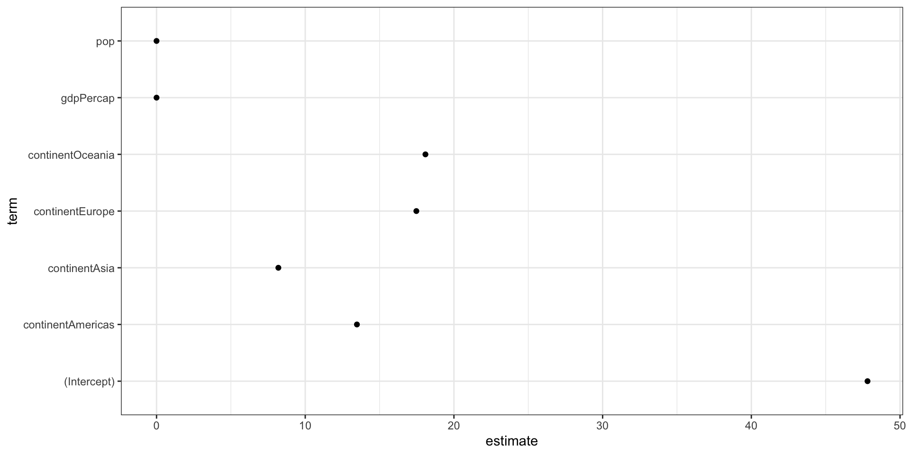
tidy()We can call additional arguments in tidy(), like conf.int to calculate confidence intervals for the estimates.
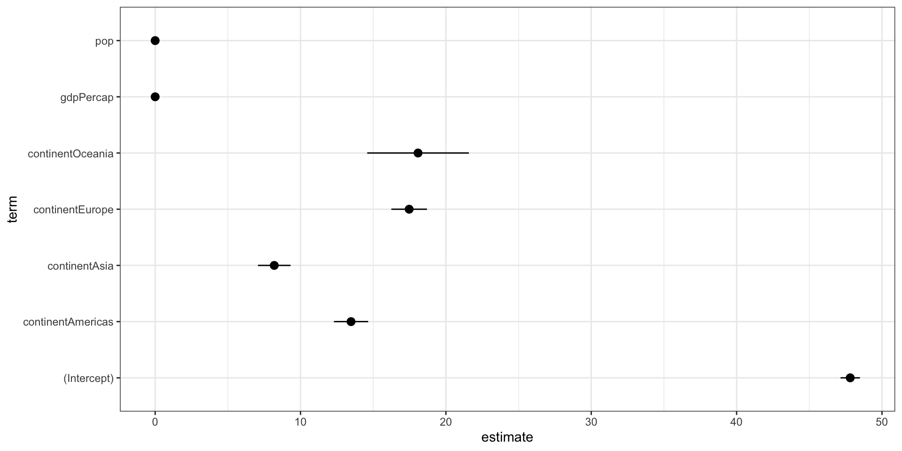
augment()Values returned by augment() are at the level of the original observations. They can be added to the dta frame that the model is based on.
Calling augment() will return a data frame with the original observations in the estimation model as well as fitted values (.fitted), standard errors of fitted values (.se.fit), residuals (.resid), the diagonal of the hat matrix (.hat), an estimate of residual SD when the corresponding observation is dropped from the model (sigma), Cook’s distance (.cooksd), and the standardised residuals (.std.resid)
augment()# A tibble: 6 × 10
lifeExp gdpPercap pop continent .fitted .resid .hat .sigma .cooksd
<dbl> <dbl> <dbl> <fct> <dbl> <dbl> <dbl> <dbl> <dbl>
1 28.8 779. 8425333 Asia 56.4 -27.6 0.003 8.34 0.005
2 30.3 821. 9240934 Asia 56.4 -26.1 0.003 8.34 0.004
3 32.0 853. 10267083 Asia 56.5 -24.5 0.003 8.35 0.004
4 34.0 836. 11537966 Asia 56.5 -22.4 0.003 8.35 0.003
5 36.1 740. 13079460 Asia 56.4 -20.3 0.003 8.35 0.003
6 38.4 786. 14880372 Asia 56.5 -18.0 0.003 8.36 0.002
# ℹ 1 more variable: .std.resid <dbl>augment()By default augment() will extract the variables used in the model itself. Additional variables from the original data frame can be added by specifying the data argument.
# A tibble: 6 × 12
country continent year lifeExp pop gdpPercap .fitted .resid .hat .sigma
<fct> <fct> <dbl> <dbl> <dbl> <dbl> <dbl> <dbl> <dbl> <dbl>
1 Afghanis… Asia 1952 28.8 8.43e6 779. 56.4 -27.6 0.003 8.34
2 Afghanis… Asia 1957 30.3 9.24e6 821. 56.4 -26.1 0.003 8.34
3 Afghanis… Asia 1962 32.0 1.03e7 853. 56.5 -24.5 0.003 8.35
4 Afghanis… Asia 1967 34.0 1.15e7 836. 56.5 -22.4 0.003 8.35
5 Afghanis… Asia 1972 36.1 1.31e7 740. 56.4 -20.3 0.003 8.35
6 Afghanis… Asia 1977 38.4 1.49e7 786. 56.5 -18.0 0.003 8.36
# ℹ 2 more variables: .cooksd <dbl>, .std.resid <dbl>augment()We can use the new columns from augment() to create standard regression plots.
For example, here we plot residuals versus fitted values.
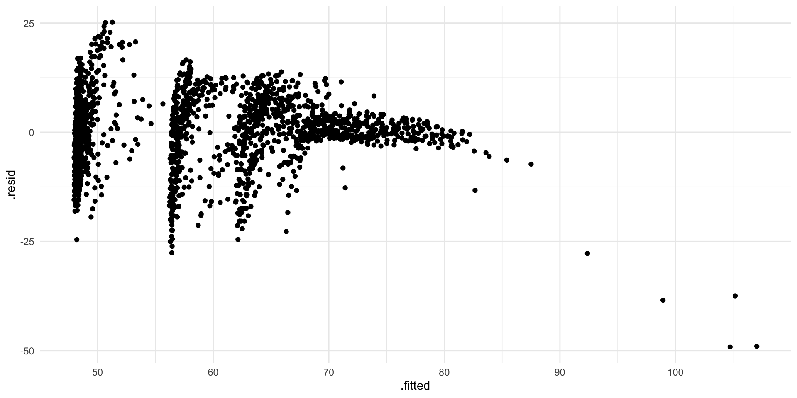
glanceBy itself, glance() produces a one-row tibble with model-level metrics. It’s useful for comparing models based on \(R^2\), AIC, BIC, etc.
broom Matter for Visualisation?broom makes it possible fit models to different subsets of data and get usable tables of results in return.
Let’s see broom in action by looking at the relation between life expectancy (lifeExp) and GDP (gdpPercap) by continent (continent)
Our gapfinder data has data organised by continent and year. If we wanted to look at just Europe in 1977 we might take a slide of our data manually like so:
country continent year lifeExp
Albania : 1 Africa : 0 Min. :1977 Min. :59.51
Austria : 1 Americas: 0 1st Qu.:1977 1st Qu.:70.50
Belgium : 1 Asia : 0 Median :1977 Median :72.33
Bosnia and Herzegovina: 1 Europe :30 Mean :1977 Mean :71.94
Bulgaria : 1 Oceania : 0 3rd Qu.:1977 3rd Qu.:73.79
Croatia : 1 Max. :1977 Max. :76.11
(Other) :24
pop gdpPercap
Min. : 221823 Min. : 3528
1st Qu.: 4423730 1st Qu.:10360
Median : 8741694 Median :14226
Mean :17238818 Mean :14284
3rd Qu.:19707195 3rd Qu.:19052
Max. :78160773 Max. :26982
Then we could see the relationship between life expectancy (lifeExp) and GDP (gdpPercap) for that continent-year group:
Call:
lm(formula = lifeExp ~ log(gdpPercap), data = eu77)
Residuals:
Min 1Q Median 3Q Max
-7.4956 -1.0306 0.0935 1.1755 3.7125
Coefficients:
Estimate Std. Error t value Pr(>|t|)
(Intercept) 29.489 7.161 4.118 0.000306 ***
log(gdpPercap) 4.488 0.756 5.936 2.17e-06 ***
---
Signif. codes: 0 '***' 0.001 '**' 0.01 '*' 0.05 '.' 0.1 ' ' 1
Residual standard error: 2.114 on 28 degrees of freedom
Multiple R-squared: 0.5572, Adjusted R-squared: 0.5414
F-statistic: 35.24 on 1 and 28 DF, p-value: 2.173e-06broom Example: Life Expectancy and GDP by ContinentWith dplyr and broom we can do this for every continent-year slide of the data in a compact and tidy way.
To perform a grouped analysis, we start by grouping our data and then “nesting” it. - group_by() organises the data by the specified columns (continent and year) - nest() bundles the data for each group into a single column, creating a list column.
The result is a tibble where each row represents a continent-year group and contains a mini-tibble of the data for that group.
broom Example: Life Expectancy and GDP by Continent# A tibble: 60 × 3
# Groups: continent, year [60]
continent year data
<fct> <int> <list>
1 Asia 1952 <tibble [33 × 4]>
2 Asia 1957 <tibble [33 × 4]>
3 Asia 1962 <tibble [33 × 4]>
4 Asia 1967 <tibble [33 × 4]>
5 Asia 1972 <tibble [33 × 4]>
6 Asia 1977 <tibble [33 × 4]>
7 Asia 1982 <tibble [33 × 4]>
8 Asia 1987 <tibble [33 × 4]>
9 Asia 1992 <tibble [33 × 4]>
10 Asia 1997 <tibble [33 × 4]>
# ℹ 50 more rowsbroom Example: Life Expectancy and GDP by ContinentOnce the data is nested, we can use purrr: map() to apply a function to each row of the list colun. This is a powerful, compact alternative to a for loop.
mutate() to aadd a new list column called model.map() to apply the fit_ols() function to each nested data tibble in the data list column.broom Example: Life Expectancy and GDP by Continentfit_ols <- function(df) {
lm(lifeExp ~ log(gdpPercap), data = df)
}
out_le <- gapminder %>%
group_by(continent, year) %>%
nest() %>%
mutate(model = map(data, fit_ols))
out_le# A tibble: 60 × 4
# Groups: continent, year [60]
continent year data model
<fct> <int> <list> <list>
1 Asia 1952 <tibble [33 × 4]> <lm>
2 Asia 1957 <tibble [33 × 4]> <lm>
3 Asia 1962 <tibble [33 × 4]> <lm>
4 Asia 1967 <tibble [33 × 4]> <lm>
5 Asia 1972 <tibble [33 × 4]> <lm>
6 Asia 1977 <tibble [33 × 4]> <lm>
7 Asia 1982 <tibble [33 × 4]> <lm>
8 Asia 1987 <tibble [33 × 4]> <lm>
9 Asia 1992 <tibble [33 × 4]> <lm>
10 Asia 1997 <tibble [33 × 4]> <lm>
# ℹ 50 more rowsbroom Example: Life Expectancy and GDP by ContinentThe model list column now contains a linear model for each continent-year group. To make the results usable, we can “tidy” and “unnest” them.
Use broom::tidy() to extract key summary statistics (e.g., estimates, standard errors, p-values) from each model.
Use unnest() to expand the tidied list column back into a regular tibble.
broom Example: Life Expectancy and GDP by ContinentFirst we extract summary statistics from each model by mapping the tidy() function from broom to the model list column. Then we unnest the result, dropping the other columns in the process. We filter out all the Intercept terms (out of convenience), and also drop all observations from Oceania (because too few observations). We put the results in an object called out_tidy.
fit_ols <- function(df) {
lm(lifeExp ~ log(gdpPercap), data = df)
}
out_tidy <- gapminder %>%
group_by(continent, year) %>%
nest() %>%
mutate(model = map(data, fit_ols),
tidied = map(model, tidy)) %>%
unnest(tidied, .drop = TRUE) %>%
filter(term %nin% "(Intercept)" &
continent %nin% "Oceania")
out_tidy %>%
ungroup() %>%
sample_n(5)broom Example: Life Expectancy and GDP by Continent# A tibble: 5 × 9
continent year data model term estimate std.error statistic p.value
<fct> <int> <list> <list> <chr> <dbl> <dbl> <dbl> <dbl>
1 Asia 2002 <tibble> <lm> log(gdpP… 5.44 0.696 7.82 8.05e-9
2 Africa 1982 <tibble> <lm> log(gdpP… 5.61 0.898 6.25 8.79e-8
3 Africa 1967 <tibble> <lm> log(gdpP… 3.07 0.988 3.11 3.13e-3
4 Africa 1997 <tibble> <lm> log(gdpP… 6.89 1.04 6.64 2.16e-8
5 Europe 2002 <tibble> <lm> log(gdpP… 3.74 0.445 8.40 3.91e-9broom Example: Life Expectancy and GDP by ContinentWith our data in a tidy format, we can now plot the results to visualise the relations we’ve modelled.
Let’s plot the estimated coefficient for the relation between log GDP per capita and life expectancy for each continent and year.
p <- ggplot(data = out_tidy,
mapping = aes(x = year, y = estimate,
ymin = estimate - 2*std.error,
ymax = estimate + 2*std.error,
group = continent, color = continent)) +
geom_pointrange(position = position_dodge(width = 1)) +
scale_x_continuous(breaks = unique(gapminder$year)) +
theme(legend.position = "top") +
labs(x = "Year", y = "Estimate", color = "Continent") +
theme_bw()broom Example: Life Expectancy and GDP by Continent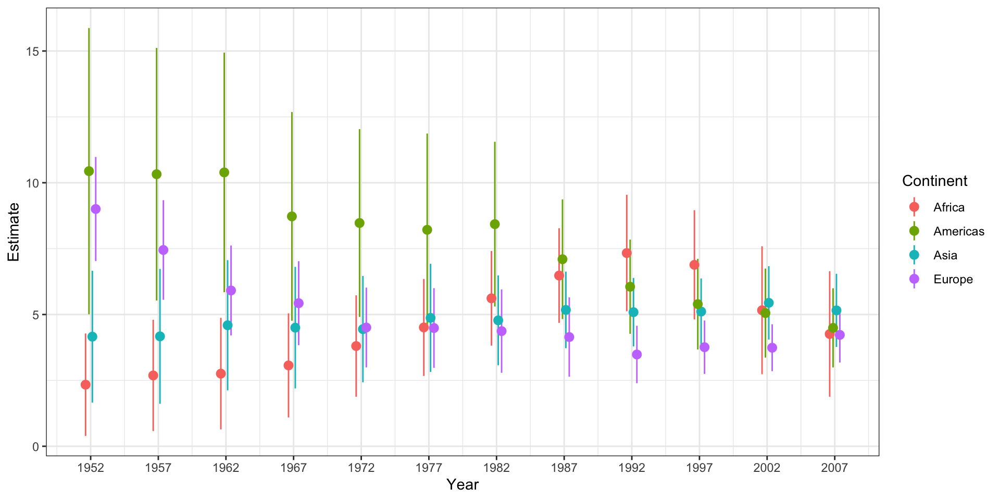
Social science data often comes from complex surveys. These datasets require specialized tools to correctly account for:
The survey package handles this, but the helper package srvyr lets us use its functions within a familiar tidyverse pipeline.
We begin by creating a survey object that contains our data along with the design information. This lets us use the specialized functions from the survey library.
as_survey_design() is the key function here.
Once the gss_wt object is created, we can use survey_mean() within a summarize() call to calculate weighted proportions and their standard errors.
We can apply this to different groups (e.g., race, education) across years.
out_grp <- gss_wt %>%
filter(year %in% seq(1976, 2016, by = 4)) %>%
group_by(year, race, degree) %>%
summarize(prop = survey_mean(na.rm = TRUE))
out_grp# A tibble: 162 × 5
# Groups: year, race [30]
year race degree prop prop_se
<dbl> <fct> <fct> <dbl> <dbl>
1 1976 White Lt High School 0.327 0.0160
2 1976 White High School 0.517 0.0161
3 1976 White Junior College 0.0128 0.00298
4 1976 White Bachelor 0.101 0.00955
5 1976 White Graduate 0.0392 0.00642
6 1976 White <NA> 0.00285 0.00151
7 1976 Black Lt High School 0.558 0.0603
8 1976 Black High School 0.335 0.0476
9 1976 Black Junior College 0.0423 0.0192
10 1976 Black Bachelor 0.0577 0.0238
# ℹ 152 more rowsThe out_grp data frame contains the proportions and their standard errors (prop_se). We can use this information to create plots that show not just the point estimates but also the associated uncertainty.
The first plot, a “dynamite plot,” uses columns and error bars.
p <- ggplot(data = subset(out_grp, race %nin% "Other"),
mapping = aes(x = degree, y = prop,
ymin = prop - 2*prop_se,
ymax = prop + 2*prop_se,
fill = race,
color = race,
group = race))
dodge <- position_dodge(width=0.9)
p + geom_col(position = dodge, alpha = 0.2) +
geom_errorbar(position = dodge, width = 0.2) +
scale_x_discrete(labels = scales::wrap_format(10)) +
scale_y_continuous(labels = scales::percent) +
scale_color_brewer(type = "qual", palette = "Dark2") +
scale_fill_brewer(type = "qual", palette = "Dark2") +
labs(title = "Educational Attainment by Race",
subtitle = "GSS 1976-2016",
fill = "Race",
color = "Race",
x = NULL, y = "Percent") +
facet_wrap(~ year, ncol = 2) +
theme(legend.position = "top")The out_grp data frame contains the proportions and their standard errors (prop_se). We can use this information to create plots that show not just the point estimates but also the associated uncertainty.
The first plot, a “dynamite plot,” uses columns and error bars.
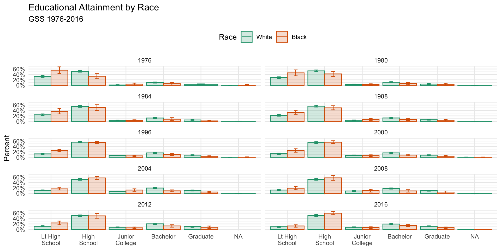
When plotting trends over time, using lines is often more effective than bars.
This alternative plot facets by educational degree and plots year on the x-axis, allowing for easier comparison of time trends across different racial groups.
#| fig.width: 8
#| fig.height: 12
p <- ggplot(data = subset(out_grp, race %nin% "Other" & !is.na(degree)),
mapping = aes(x = year, y = prop, ymin = prop - 2*prop_se,
ymax = prop + 2*prop_se, fill = race, color = race,
group = race))
p + geom_ribbon(alpha = 0.3, aes(color = NULL)) +
geom_line() +
facet_wrap(~ degree, ncol = 1) +
scale_y_continuous(labels = scales::percent) +
scale_color_brewer(type = "qual", palette = "Dark2") +
scale_fill_brewer(type = "qual", palette = "Dark2") +
labs(title = "Educational Attainment\nby Race",
subtitle = "GSS 1976-2016", fill = "Race",
color = "Race", x = NULL, y = "Percent") +
theme(legend.position = "top")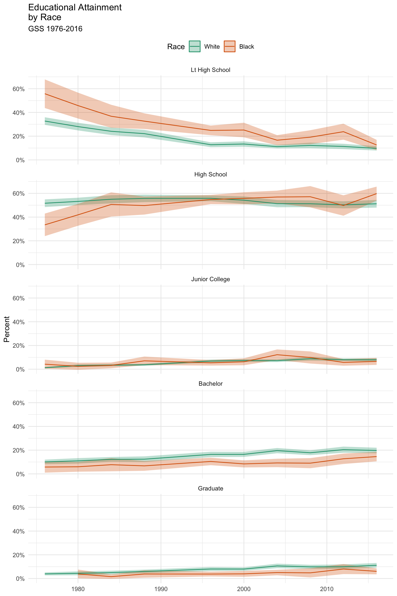
Burr PSY6422